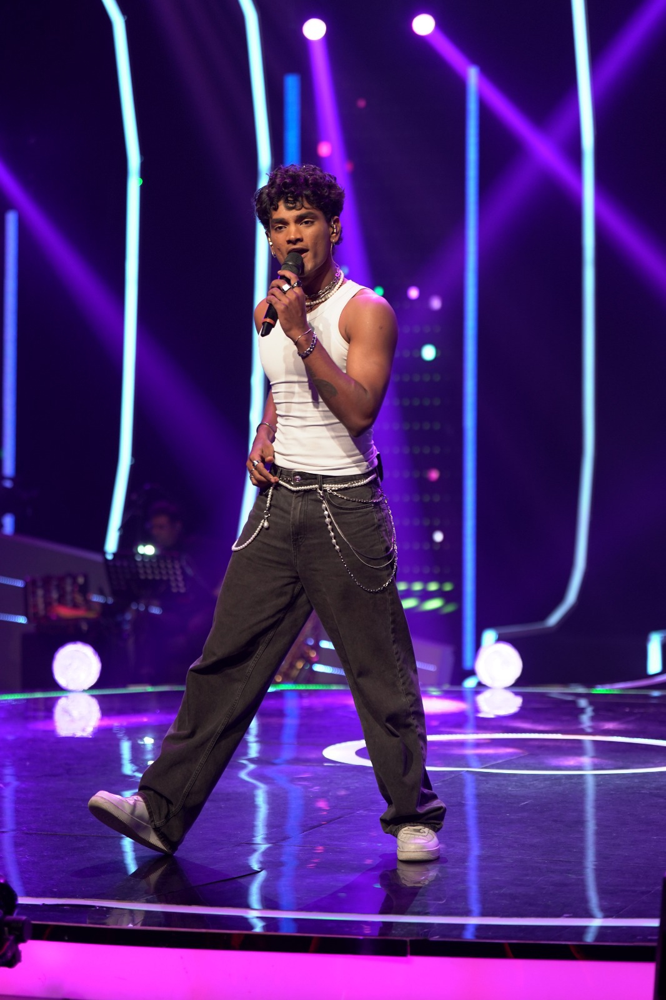
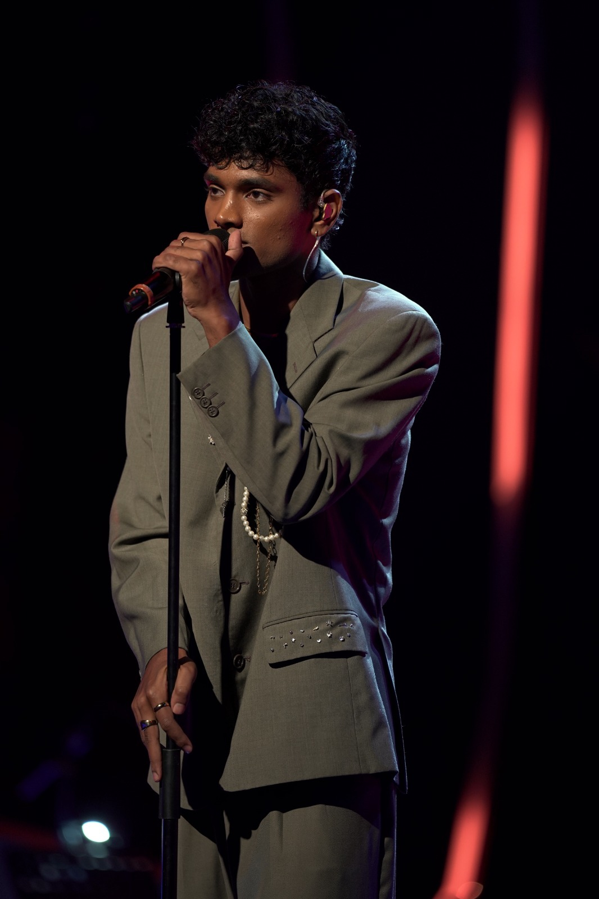

MEET SRI LANKA'S RISING ROCK ARTIST
ISAAC TIMOTHY
Singer | Performer | Songwriter | Composer
ABOUT
I am a singer-songwriter redefining what it means to be a modern Sri Lankan artist. With my powerhouse vocals, commanding stage presence, and fearless fusion of rock, pop, and Sri Lankan sounds, I've proven that I'm more than just a competition success story-I'm a rising artist carving out my own lane in the industry.
After capturing hearts on The Voice Sri Lanka Season 3 (2025) under the guidance of my coach, Raini Charuka, my journey has been unstoppable. Reaching the finals of the show allowed me to connect deeply with audiences through passionate performances and emotional storytelling. My goal has always been to balance raw power with genuine vulnerability, creating music that can both move and electrify a crowd.
Now, I'm stepping into a new chapter of my career. My debut Sinhala single, Akaalaye, is a collaboration with M Entertainment, produced by Dilru Costa (Cozzy) and written by Yashodha Adhikari. The song blends my signature rock-pop edge with the richness of Sri Lankan music, marking a bold new direction for me. I'm also preparing to release more Sinhala and English music this year.
DEBUT SINGLE – "AKAALAYE"
Isaac released his debut single "Akaalaye" with M Entertainment on October 18, 2025, across all major digital platforms. He worked with producer Dilru Costa (cozzy.mp3), lyricist Yashoda for the track, and director Sahan Wickramaarachchi for the music video.
VIDEOS
Stream on
Concerts
Isaac has showcased his dynamic stage presence at notable live events.
He performed at the Naadhagama Concert, captivating audiences with his powerful vocals, and later shared the stage in a concert with Wasthi, further establishing his reputation as a rising live performer in Sri Lanka's music scene.


The Voice Sri Lanka Season 3
Isaac's rise to fame as the New Rock Artist began with his powerful comeback on The Voice Sri Lanka Season 3 2025, joining Team Raini Charuka, who used her ‘Block’ on Mihindu Ariyaratne. Isaac became a fan-favorite as he earned the ‘Most Votes Online’ for both his LIVE performances making him Team Raini's Finalist.




Radio Feature
Isaac was featured on the Radio Channel FOX 91.4 FM's Artist Spotlight segment and Sirasa's 106.5 Y FM on several occasions, where his journey and music were highlighted to the national audience.